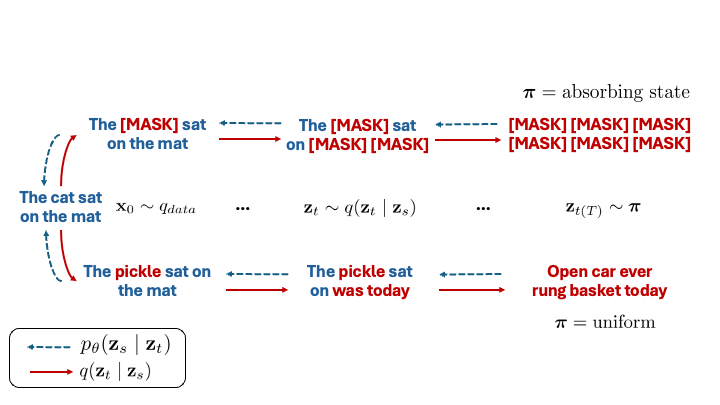

In diffusion, we train a parametric model \(p_\theta\) to undo corruption from latent variables \(\mathbf{z}_t\) (for \(t \in [0, 1]\)) that are produced from a fixed forward noising process defined by \(q\) (
Sohl-Dickstein et al., 2015;
Song & Ermon, 2019;
Ho et al., 2020).
Thus, starting from a sample \(\mathbf{z}_{t=1}\) from some limiting distribution \(\boldsymbol{\pi}\), we can iteratively denoise to produce latents \(\mathbf{z}_t, \mathbf{z}_s, \ldots, \mathbf{z}_{t=0}, \mathbf{x}_0\), with \(\mathbf{x}_0\) appearing to have been drawn from the true data distribution for well-trained denoising models.
In discrete diffusion, these variables refer to one-hot vectors, i.e., \(\mathbf{x}_0, \mathbf{z}_t \in \mathcal{V}\) where \(\mathcal{V} = \{\mathbf{z} \in \{0, 1\}^N : \sum_i \mathbf{z}_i = 1\} \subset \Delta^N\), with \(\Delta^N\) being the simplex over \(N\) categories (i.e., the vocab size).

Discrete diffusion with absorbing state (top) or uniform noise (bottom) as the limiting distribution \(\boldsymbol{\pi}\).
The seminal D3PM paper (
Austin et al., 2021) defined a noising process over discrete data via transition matrices \(Q_{t|s}\) whose \((i, j)^{\text{th}}\) entries correspond to the probability of transitioning from the \(i^{\text{th}}\) state at time \(s\) to the \(j^{\text{th}}\) state at time \(t\).
This induces a Markov corruption process where we have \(q(\mathbf{z}_t | \mathbf{z}_s) = \mathrm{Cat}(\mathbf{z}_t; Q_{t|s}\mathbf{z}_s)\).
Sahoo et al. (2024) build off this framework to introduce specialized algorithms that are both simpler and more effective than the general D3PM framework.
They focus on a specific class of forward processes from D3PM that can be defined as interpolations between clean data and a noisy prior \(\boldsymbol{\pi}\), and we adopt their notation below:
$$q(\mathbf{z}_t \mid \mathbf{x}_0) = \mathrm{Cat}(\mathbf{z}_t; \alpha_t\mathbf{x}_0 + (1 − \alpha_t)\boldsymbol{\pi}),$$
where \(\alpha_t = \alpha(t)\) is a noise schedule monotonically decreasing in \(t\).
Defining \(\alpha_{t|s} = \alpha_t / \alpha_s\), this class of processes admit the following posteriors
$$q(\mathbf{z}_s | \mathbf{z}_t, \mathbf{x}_0) = \mathrm{Cat}\left(\mathbf{z}_s; \frac{[\alpha_{t|s} \mathbf{z}_t + (1 - \alpha_{t|s})\mathbf{1} \boldsymbol{\pi}^\top \mathbf{z}_t] \odot [\alpha_s \mathbf{x}_0 + (1 - \alpha_s) \boldsymbol{\pi}]}{\alpha_t \mathbf{z}_t^\top \mathbf{x}_0 + (1 - \alpha_t)\mathbf{z}_t^\top\boldsymbol{\pi}} \right).$$
Of note, for absorbing-state diffusion, where \(\boldsymbol{\pi} = \boldsymbol{m}\), a one-hot vector at the special \(\texttt{[MASK]}\) token index,
Sahoo et al. (2024) show that when the latent \(\mathbf{z}_t \neq \boldsymbol{m}\) then \(q(\mathbf{z}_s \mid \mathbf{z}_t, \mathbf{x}_0) = \mathrm{Cat}(\mathbf{z}_s; \mathbf{z}_t)\), which reflects the fact that unasked tokens at time \(t\) must remain unmasked for all time \(s < t\).
Diffusion models are trained to minimize a variational upper bound (NELBO) given by:
$$\mathbb{E}_q\Bigg[\underbrace{- \log p_\theta(\mathbf{x}_0 | \mathbf{z}_{t(0)})}_{\normalsize\begin{array}{c}\mathcal{L}_{recons}\end{array}} + \underbrace{\sum_{i=1}^T \mathrm{KL}[q(\mathbf{z}_{s(i)} | \mathbf{z}_{t(i)}, \mathbf{x}_0) \| p_\theta(\mathbf{z}_{s(i)} | \mathbf{z}_{t(i)})]}_{\normalsize\begin{array}{c}\mathcal{L}_{diff}\end{array}}\Bigg] + \underbrace{\mathrm{KL}[q(\mathbf{z}_{t(T)} | \mathbf{x}_0) \| p_\theta(\mathbf{z}_{t(T)})]}_{\normalsize \begin{array}{c}\mathcal{L}_{prior}\end{array}},$$
where \(\mathrm{KL}\) refers to the Kullback-Leibler divergence, and the expectation is taken over the noising process.
\(\mathcal{L}_{prior}\) refers to the prior regularization term, which is used to ensure that the final latent \(\mathbf{z}_{t(T)}\) is close to the prior distribution.
\(\mathcal{L}_{recons}\) is the reconstruction loss, which measures the negative log-likelihood of the clean data given the latent at time \(t(0)\).
Finally, \(\mathcal{L}_{diff}\) is the diffusion loss, which measures the KL divergence between the noised and denoised latents.
Often we model entire sequences, and not just individual tokens, which we denote as \(\mathbf{x}_0^{(1:L)}\) and \(\mathbf{z}_t^{(1:L)}\) for a sequences clean data and latents of length \(L\), respectively.
We assume that the forward noising process factorizes independently across tokens, so that the noising process for a sequence is the product of the noising processes for each token and that the denoising network, when conditioned on a sequence of latent variables, factorizes independently across tokens as well.